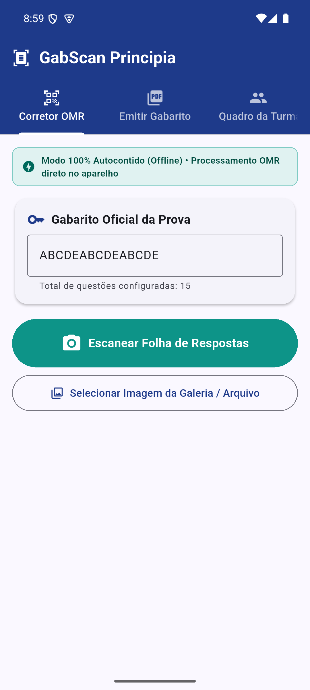

Correção de provas em segundos direto pelo celular
Transforme a câmera do seu smartphone em uma poderosa leitora óptica (OMR). Corrija gabaritos instantaneamente, com auditoria visual, análise pedagógica de distratores e exportação para Excel.

Construído sob medida para a rotina do professor
Diga adeus às horas exaustivas de correção manual e às caras leitoras ópticas de mesa.
Motor OMR Local
Processamento instantâneo via visão computacional em Dart puro. Corrige rotação, perspectiva trapezoidal e sombras com algoritmo de Otsu diretamente no celular.
Auditoria Visual Transparente
Círculos verdes nos acertos, vermelhos com "X" nos erros e laranjas indicando o gabarito oficial esperado. Você tem certeza absoluta do que foi lido.
Inteligência Pedagógica
Identifique na hora quais foram as questões mais difíceis da turma e descubra quais alternativas funcionaram como "pegadinhas" (análise de distratores).
Economia Extrema de Papel
Gere folhas padronizadas de 1, 2 ou 4 gabaritos por página A4 com linhas pontilhadas de corte. Reduza o custo de impressão da escola em até 4 vezes.
OCR do Nome & Chamada
Reconhecimento óptico automático do nome manuscrito do aluno no cabeçalho com sugestão inteligente por similaridade cruzada com a Lista de Chamada da turma.
100% Offline & LGPD
Nenhuma foto, nota ou nome de aluno é transmitido para servidores ou nuvem. Todos os dados permanecem isolados na memória segura do seu próprio celular.
Imprima direto do celular em PDF
Escolha o formato ideal para seu simulado ou prova rápida e economize papel.
1 por Folha (A4)
Ideal para avaliações completas de até 50 questões com cabeçalho amplo e espaço generoso.
2 por Folha (Meia A4 ✂)
Dois gabaritos lado a lado na folha A4 com linha guia de corte. O formato mais equilibrado para até 50 questões.
4 por Folha (A6 ✂)
Quatro gabaritos compactos em uma única folha A4. Perfeito para testes semanais de 10 a 25 questões.
Como usar o GabScan em 3 passos
Simples, intuitivo e pronto para uso em sala de aula sem complicação.
Emita as Folhas em PDF
Selecione a quantidade de questões (10, 25 ou 50), escolha o layout econômico e gere o PDF na hora para impressão ou compartilhamento.
Configure o Gabarito
Marque as respostas oficiais corretas com toques simples no aplicativo e ajuste a nota de corte desejada para a turma.
Escaneie e Exporte
Aponte a câmera para a folha do aluno. O app corrige na hora, anota a imagem com a auditoria e gera a planilha consolidada em CSV.